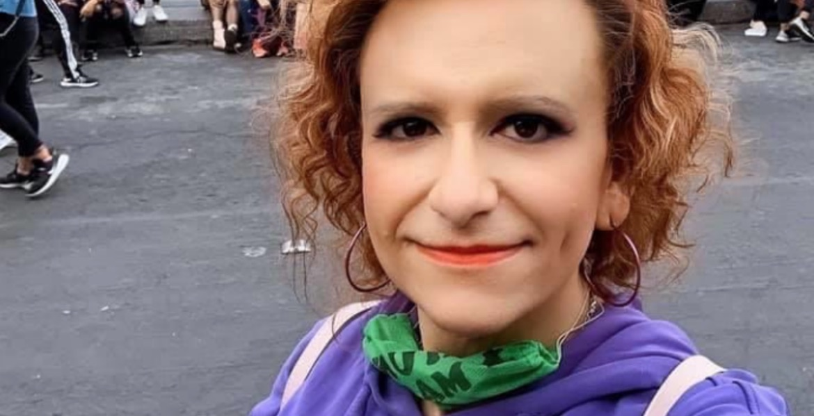

On June 8, doctor and trans activist, defender of the rights of the LGBTIQ + community was reported as missing. After ten days search, her body was located near the town of Tres Marías in the state of Morelos. She served as the head of educational quality area of the National Medical Center and served as an activist in defense of the trans community in Mexico City. In 2019, there was a record of 117 cases of transfemicides. Mexico is the second highest country for transfemicide in LATAM, behind Brazil.
25 year old Silvana, Chilean mother, was a sunlight to her friends and family. When they were told she had committed suicide, they did not believe it. Police and prosecutors did not take concerns of Ms Garrido's family and friends. The police chose to believe the version of events put forward by the victim's ex-partner Fernando Flores. Silvana's family had to fight for four years ruthlessly to achieve justice. In April 2023, Fernando Flores was found guilty of pushing Silvana to her death from the 23rd floor of their apartment. He was sentenced to life in prison.
Lucia was just 16. An Argentian daughter to Marta Montero, she was just starting to experience the life of young adulthood. This was taken away from her as she was drugged and killed by two men. This pushed forward the fight against femicides in LATAM. The following Wednesday, women from Argentina, Chile, Uruguay, Mexico, and Guatemala protested in streets to condemn gender-based violence, with the words of "Mi una menos", "not one woman less."